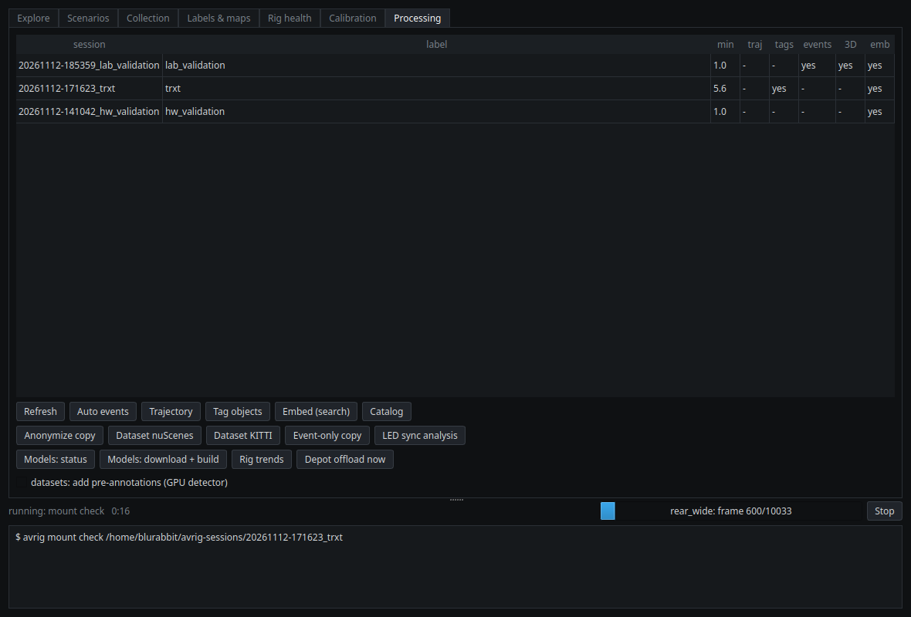
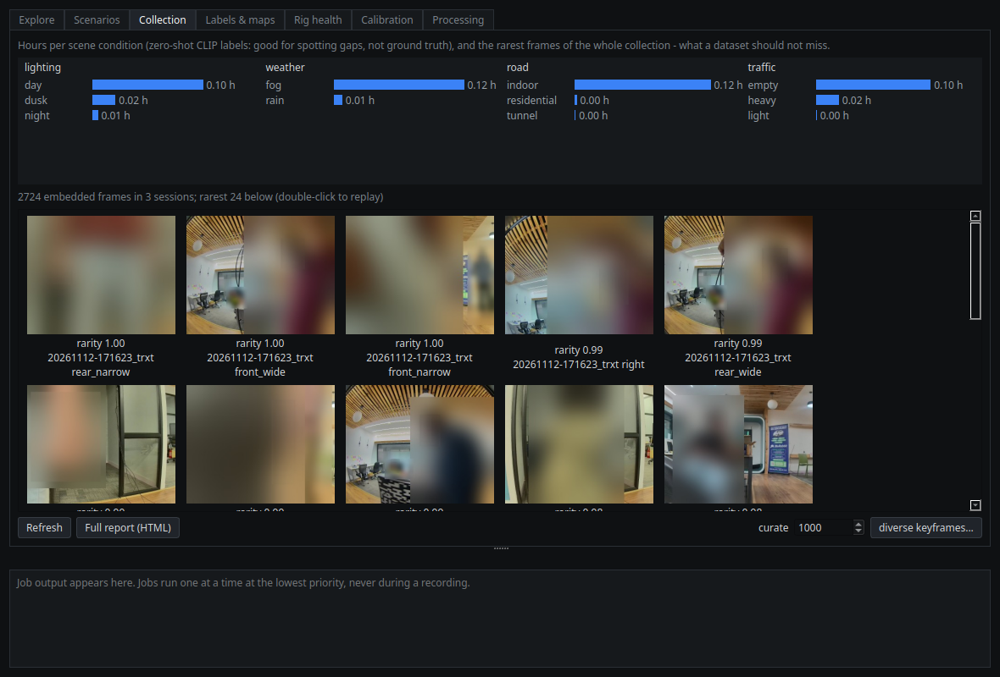
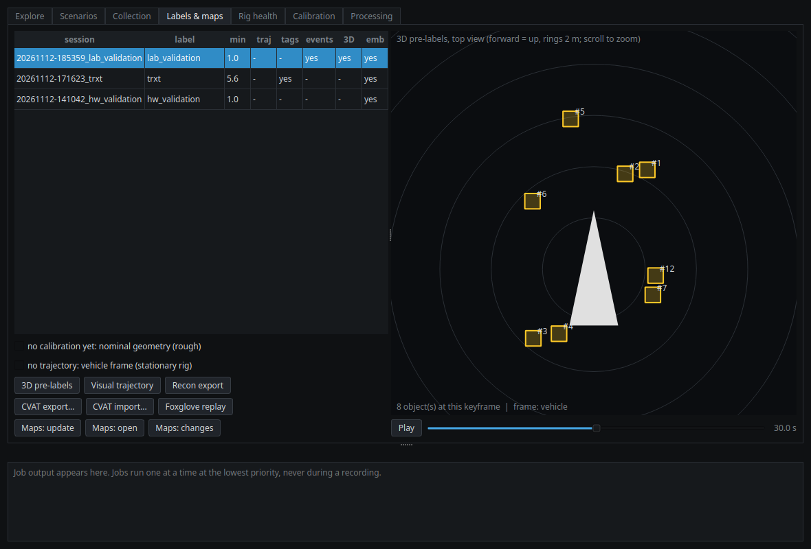
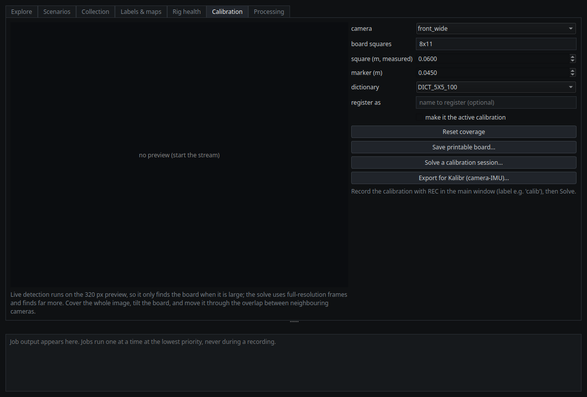

From drives to data
After the drive, Argus turns recordings into something a perception team can use: searchable by meaning, curated for diversity, pre-labelled in 3D, placed on a smoothed trajectory, mapped across drives, and exported to the formats the tools expect.
None of this runs during a recording. Every job runs at the lowest CPU and I/O priority, refuses to start while recording, and stops itself if one starts. In the GUI they live in the Lab window — Explore, Scenarios, Collection, Labels & maps, Rig health, Calibration and Processing — and every job shows a progress bar, elapsed time and a Stop button.

Search by meaning

avrig embed SESSION gives every second of every camera a CLIP ViT-B/32 embedding (MIT licence) and zero-shot scene labels for lighting, weather, road type and traffic. Only the encoder's keyframes are decoded — one per second, about 1/30 of the video — so a minute of six-camera recording embeds in 4 s from a warm cache (21 s from a cold disk).
avrig find "cyclist crossing at night"
avrig find --like SESSION:front_wide:MONO_NS # more like this frame
avrig find --image photo.jpg # search with an image
avrig search 'scene:rain night person>=2' # mixed with catalog terms- Text is encoded with CLIP's own byte-pair tokenizer (reimplemented, checked against reference token ids).
- Black frames (a lens cap, the first frame of a stream) are skipped — otherwise they match every query weakly.
- Results are de-duplicated: near-identical frames (cosine similarity above 0.95, a parked car seeing the same wall in many sessions) show once.
- CLIP B/32 is coarse: it finds scene types and objects well, fine attributes (a shirt pattern) less so.
Scenario catalog
avrig catalog cuts every session into 10 s windows in one SQLite file (incremental): position and speed, sun elevation (day / twilight / night computed from UTC and position, not from exposure), image brightness, events, detected objects, the scene labels and the session metadata. avrig search ANDs terms:
night person>=3 road:highway
hard_brake speed>40
traffic_light twilight
near:LAT,LON,KM vehicle:X route:X weather:X tag:X since:2026-11-01
"wet road at night with a cyclist" # free text, ranked by meaningHits are merged into clips; --export DIR writes each as an MCAP clip starting at the keyframe before it, so it decodes from its first frame (a 10 s clip in 6.8 s), or as frame sets. avrig coverage draws every drive on one map, coloured by day / twilight / night, with hours and kilometres per condition.
Collection and curation

- Coverage by condition — hours per lighting, weather, road and traffic label, so gaps (“little night driving, no rain”) are visible.
- Rarity — for each frame, 1 − its mean similarity to its 10 nearest frames outside its own session's ±30 s (so a long stop does not make itself common), expressed as a percentile of the whole collection.
- Clusters — k-means with k-means++ seeding (plain random seeding missed small, rare clusters), smallest first.
- Curation —
avrig curate --budget Npicks a diverse selection by farthest-point sampling weighted by rarity, thenavrig dataset SESSION --select selection.csvexports exactly those keyframes.
Tagging and privacy blurring
avrig tag SESSIONruns YOLOX-s on every camera at 2 fps:tags.csvfor the catalog anddetections.csvas pre-annotations. 5.6 min × 6 cameras took 118 s — 3× faster than real time.avrig anonymize SESSIONwrites a copy (<session>_anon) with faces and number plates blurred: YuNet faces on the frame and inside each person's head region, a plate detector on the frame and on each vehicle, the head of anyone whose face was not found blurred anyway, and the previous frame's boxes blurred too, so a one-frame miss does not leak. Pixelation is irreversible. Every output file has exactly the frames of its source (checked), so replay and export work unchanged. 61 s × 6 cameras (10,876 frames): 494 s with 3 workers. Review blurred data before release — detection is never perfect.
3D pre-labels

avrig label3d SESSION builds tracked 3D boxes of road users from the cameras alone:
- Detect and track — YOLOX at 10 Hz in every camera on a common time grid; per-camera tracking (Kalman + Hungarian on IoU) →
tracks2d.csv. - Lift to 3D — the ray through the bottom centre of each box meets the ground plane (calibrated camera height and angle); the object's centre is placed where that ray enters a road-aligned footprint of the class's size. When the box is cut by the image edge or the ray misses the ground, the range comes from Depth Anything V2 Small (Apache-2.0), scaled to metres by a RANSAC fit of the ground in the same frame.
- Merge and smooth — observations are moved to the world frame with the trajectory, the same object seen by several cameras is merged into one instance, tracks are smoothed, heading comes from motion.
- Label — at 2 Hz (the nuScenes keyframe rate) →
labels3d.csv, and nuScenescategory,attribute,instanceandsample_annotationtables inavrig dataset, markedprelabel.
Review loop: avrig cvat export SESSION --cam X writes the 2D tracks as CVAT for video 1.1; a person corrects them in CVAT; avrig cvat import SESSION FOLDER stores the reviewed tracks, and the next label3d lifts from them instead of the detector's.
Cost: 33 s for 61 s of six cameras (three camera workers sharing one GPU lock). On simulated data with exact boxes, positions came within a median 0.2 m for front cameras and 0.5 m for a side camera seeing cars at an angle. These are monocular pre-labels, not LiDAR ground truth: error grows with range, and occluded objects are missed. Without a calibration, --nominal-geometry gives rough labels marked as such.
Trajectory and visual speed
avrig trajectory SESSION computes a 6-DoF pose for every IMU sample, and so for every camera frame:
- an error-state Kalman filter (15 states: position, velocity, attitude, accelerometer and gyro biases) driven by the IMU, followed by a Rauch-Tung-Striebel smoother, so every pose uses data before and after it;
- GNSS position at the fix's own time with the antenna lever arm, GNSS velocity when moving, zero-velocity updates when stopped, a no-sideslip constraint for a car, and CAN wheel speed when available;
- IMU mounting estimated from the drive itself (roll / pitch from gravity, yaw by matching the IMU's horizontal acceleration to the vehicle's) — within 0.1° in simulation, including upside-down and odd yaw mountings.
Visual speed (--visual) turns a calibrated forward camera into a wheel-speed sensor for tunnels and flyovers. Road features 3–15 m ahead are tracked between neighbouring frames; the next frame is first warped along the road plane by the previous motion, so tracking holds at highway speed; every tracked road pixel is a point on the ground in metres, and a RANSAC 2D rigid fit gives forward speed and yaw rate. The speed's scale is calibrated against GNSS where both exist, and each measurement enters the filter with its own uncertainty.
| Simulated result | Value |
|---|---|
| Trajectory, 200 s drive, 1 Hz GNSS with 1.5 m RMS error | 0.37–0.42 m RMS horizontal; yaw 0.06–0.08° median; the reported 1-σ matched the real error |
| Visual speed on a rendered road | ±1.5 % from 5 to 45 m/s (162 km/h); yaw rate within 0.3°/s |
| 120 s GNSS outage (1.27 km), drifting accelerometer bias | max error 5.2 m → 0.57 m with visual speed; a 2 % scale error recovered within 0.07 % |
Map layers
avrig maps update adds sessions to one incremental map database; avrig maps html draws it; avrig maps changes lists what changed.
- Road roughness — IMU vertical vibration, band-passed 0.5–20 Hz, RMS per second while moving, normalised by speed (RMS / √(v / 10 m/s)) and averaged into 10 m cells; every pass refines it.
- Potholes and bumps — vertical peaks above 0.35 g, with position and speed.
- Landmarks — traffic lights and stop signs triangulated from their tracked detections with the trajectory and calibration, merged across drives within 4 m.
- Changes — a landmark that later passes have in view but no longer see (“possibly removed”), or one that appears where earlier passes saw nothing (“new”).
On synthetic drives: rough road ranked more than 3× smooth (braking excluded), the pothole found at its second, landmarks within 0.6 m, a removed sign reported after 2 passes.
Calibration studio

avrig calibrate boardwrites a printable ChArUco board at true size. Print at 100 %, mount it flat, and measure a square.- Record a session while moving the board through every camera's whole image and through the overlap of neighbouring cameras; the GUI shows live detection and coverage.
avrig calibrate solve SESSION --square 0.0597 --register NAME --activate: full-resolution frames on NVDEC, the fisheye (Kannala-Brandt) model for wide lenses and pinhole + radial-tangential for narrow ones, outlier-view rejection, and extrinsics from hardware-synced frame pairs (~30 µs apart) chained to the reference camera. Writescalibration.yaml, ROScamera_info, a Kalibrcamchain.yamland a report.- Camera-IMU:
avrig calibrate kalibr SESSIONexports images andimu0.csvfor Kalibr (which needs an AprilGrid target).
On rendered views: pinhole focal length within 0.03 %, centre within 0.6 px, fisheye within 0.33 px median; extrinsics within 0.03° and 1.3 mm.
Datasets
- nuScenes-style (
avrig dataset SESSION --format nuscenes): keyframes at 2 Hz from all cameras, ego pose from the trajectory, camera intrinsics and poses on the vehicle (needs a calibration and the reference camera's measured pose), IMU as CAN-bus JSON, COCO pre-annotations with--annotate, and 3D pre-label tables whenlabels3d.csvexists. Tables load with the devkit's schema. - KITTI-raw-style (
--format kitti): image folders with timestamps, OXTS-style poses, camera and IMU calibration files. - Selection (
--select selection.csv): only the curated keyframes.
Foxglove live and replay
Argus speaks the Foxglove WebSocket protocol directly, with no extra packages (RFC 6455 on the Python standard library).
- Replay —
avrig foxglove SESSION [--speed 2 --start 30 --loop]streams the same messages as the MCAP export (H.265 video, IMU, GNSS, markers,/tf, annotations, calibration) at real time tows://localhost:8765. No export step, nothing written. - Live —
foxglove_live: true: while recording, small JPEG previews (~5 fps per camera), IMU at 100 Hz, the GNSS fix and the rig status. Work is done only for subscribed topics. Measured with a viewer on every topic: recorder CPU unchanged (164 %), LOCKED, 0 drops. - Safety — every viewer has a bounded send queue: a slow viewer loses messages, the rig never waits. It binds to 127.0.0.1 by default; on the LAN set
foxglove_bindand a token (?token=). The FOX chip shows the viewers.
Reconstruction export
avrig recon SESSION writes a Nerfstudio dataset: transforms.json with camera-to-world poses (trajectory × calibration, OpenGL axes, scene centred) and OPENCV / OPENCV_FISHEYE intrinsics, full-resolution images, and masks over moving objects (from the 2D tracks or detections, boxes grown 10 %), so reconstruction of the static world ignores them. Train on a desktop GPU, e.g. ns-train splatfacto --data DIR. About 35 GB per hour of driving at 2 Hz × 6 cameras.
LED sync check
Timestamps can agree while images do not. avrig ledsync flashes an LED on a 40-pin GPIO for 0.5 ms every 200.7 ms; 200 ms is six frame periods, so each flash lands 0.7 ms later in the 33.3 ms frame cycle and the flashes sweep the whole cycle in ~10 s, like a vernier. From the recorded LED brightness against each frame's timestamp, it measures each camera's exposure window relative to its own timestamp — proof that the images line up, not only the timestamps. The analysis is validated on synthetic data; the LED wiring is still to be done.